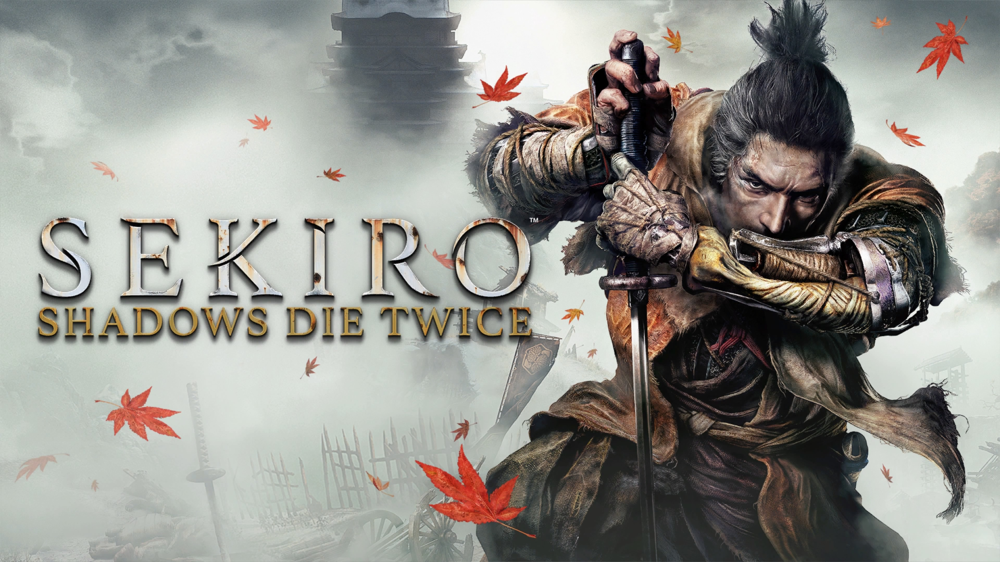

Hollow Knight é o meu jogo de plataforma favorito. Com sua dificuldade desafiadora e atmosfera única, ele proporciona uma experiência inesquecível. Sem dúvida, é o melhor jogo que já joguei, com uma arte deslumbrante e uma narrativa profunda.

Com robôs gigantes e uma jogabilidade incrível, Titanfall 2 é o melhor FPS que já experimentei. Sua campanha tem uma história envolvente e inovadora, sendo um dos jogos mais subestimados no gênero.
Red Dead Redemption 2 é uma obra-prima do mundo aberto, onde cada detalhe do Velho Oeste é ricamente representado. A história de Arthur Morgan é cativante, e o realismo do jogo faz com que cada momento seja memorável.

Cult of the Lamb mistura elementos de gestão e ação roguelike de maneira única. O estilo visual charmoso e a jogabilidade envolvente o tornam uma das surpresas mais agradáveis que já joguei.

Sekiro: Shadows Die Twice é um jogo de ação desafiador que redefine o combate em jogos de samurai. Com uma mecânica focada em precisão e estratégia, ele oferece uma experiência brutal e recompensadora, ambientada em um mundo imersivo e cheio de segredos para desvendar.
